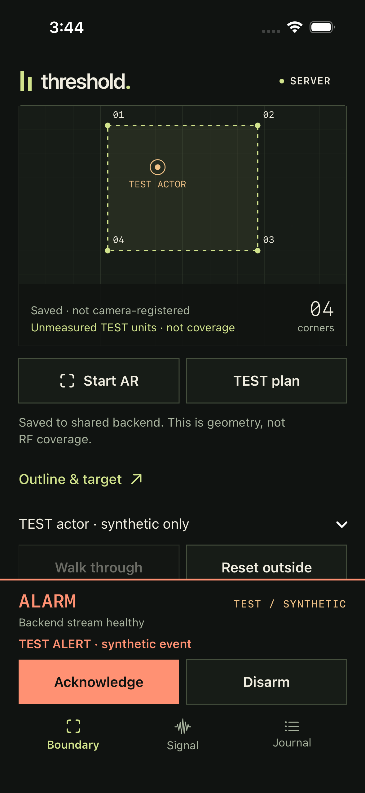

threshold.
FRONTIER CASCADIA / 2026

Shared alarm
Explicit TEST
SOFTWARE DEMONSTRATION
The prototype.
Not the animation.
- Calibrate
- Arm
- TEST input
- Acknowledge
- Disarm
| Capability | Magnetic contactDoor-state sensor | The Threshold visionBeyond door state |
|---|
SIMULATED WALK-THROUGHILLUSTRATION · NOT LIVE SENSOR DATA